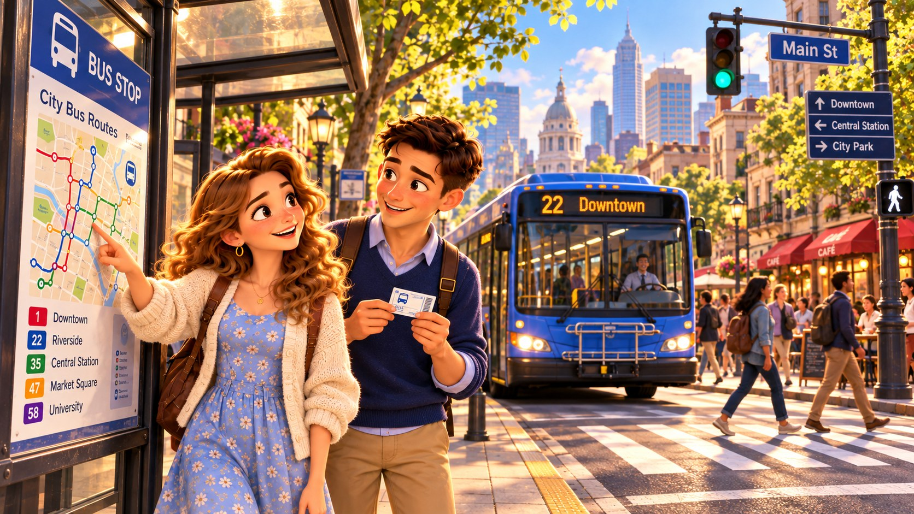

Explore Adventures ▾
Main Adventures
Community Edition
Travel Edition
Sports Edition
Space Edition
Family & Special
‹
›
← Return Panel

↕ Move
A−
A+
Reset
CITY BUS ADVENTURE
Encuentra el autobús correcto
Practica cómo elegir el autobús que va a tu destino.
¿Qué autobús va al centro?
Which bus goes downtown?
🔊 Speak
Next phrase →
Next phrase →
↘
✦ Editing Studio